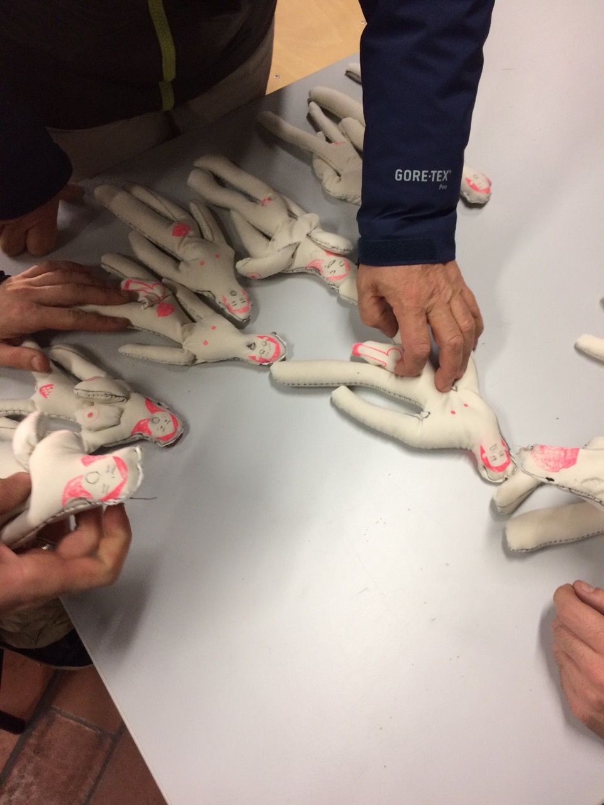

Vider la gauche, remplir la droite
Video/Performance
4min 22s
Projet de Fondation Vasarely
Je prend l'air de la droite pour remplir la gauche jusqu'à l'épuisement.
Orgasme
Video/Performance
6min 49s
Projet de Fondation Vasarely
Je gonfle la terre avec une pompe de vélo.
La music
Video/Performance
6min 32s
Un hero solitaire joue de la flute chinoise dans la colline. La soleil couchée brûle. La nuit tombe.
L'Innommable
Dessin/Instalation Pour le Projet de dessin sous la thème d'achitecture et utopie
La voie qui peut être exprimée par la parole n'est pas la Voie éternelle ; le nom qui peut être nommé n'est pas le Nom éternel.
Pour l’architecture ,ce qui m’intéresse plus c’est la relation entre les gens et les architectures sur visuel, les motifs basic de architecture m’intéresse aussi.J’aime bien simplifier les choses,je prend une façon minimaliste pour explorer les possibilitées dans le monde de points, lignes, et les faces.
Je regarde le papier comme une espace.Je suis influencée par les dessin abstrait de Bouddhisme vajrayāna et les Huit figures de divination dans le Yi King en Chine. Pour moi, les formes plus simples sont les portes pour entrer dans une espace de méditation, les formes plus simple peut évoluer le monde entière par les différents colocation. Les formes plus simples supportent les philosophies plus compliqué.
Je trouve que mes travaux sont plutôt un travail d’ avant-architecture. J’essaie d’avoir une discussion poétique dans un monde très abstrait et purement conceptuel. On peut les regarder comme une recherche pour les activités soit individuelle soit sociale dans le monde d’humain, si chaque point représente une individualitée, si chaque ligne représente un genre de limite ou une pouvoir…… Ou , en vrais, je fais les recherches de FengShui peut être.
L'orgie
Joué,Tissu,farine AOC Jeu sérigraphie

L'idée part d'un instinct pervers.
Vider la mer
Video performance
6min 45s
Je vide la mer avec une cuillière , mes pieds sont tous mouillés.
Le cygne qui fait la poème
Video performance enregéstré par ordinateur
Attraper l’esprit essentiel et oublier la forme!!!!!
La quatrième principe fondamentale
Video/Performance
La loi de la gravitation ou loi de l'attraction universelle, formulée par Isaac Newton, est la loi décrivant la gravitation comme une force responsable de la chute des corps et du mouvement des corps célestes, et de façon générale, de l'attraction entre des corps ayant une masse, par exemple les planètes, les satellites naturels ou artificiels.
Les ‘Quatre principes fondamentaux' sont ce qui a fondé la théorie mécanique classique. Elles sont les suivantes « trois lois du mouvement » et « la loi de la gravitation. » . Mais ce qui est bizarre c’est que« la loi de la gravitation » n’est pas devenue ‘La quatrième principe fondamentale ‘ mais être isolée par ‘les principes du mouvement’. En plus, les trois principes du mouvement n’arrivent pas d'expliquer les relations compliquée dans la loi de gravitation.
Pour quoi?
POUR NE PAS GASPILLER LE MOI COMME UNE UTILISATION DE CORDONÉE
Projet Performance

L'avenue Chang'an est, depuis la construction de la Cité interdite, une des plus grandes scènes de la vie politique chinoise, et encore plus depuis l’avènement de République populaire. À chaque événement de grande importance historique, c'est vers cette avenue que des milliers de gens affluent spontanément.